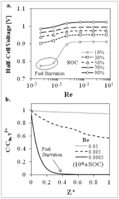

July 25th, 2012 - A new paper on pore-scale performance modeling of vanadium redox flow batteries has been published in J. of power sources
ECSL team in collaboration with Complex Fluids and Multiphase Transport Lab at Drexel has published a new paper on pore-scale performance modeling of vanadium redox flow batteries titled "Pore-scale Analysis of Effects of Electrode Morphology and Electrolyte Flow Conditions on Performance of Vanadium Redox Flow Batteries" in Journal of Power Sources.
Abstract:
A 3D pore-scale transport resolved model is used to study the performance characteristics of a vanadium redox flow battery (VRFB) with various electrode structures under different operating conditions. Three electrode structures are reconstructed from X-ray computed tomography (XCT) images of porous carbon felt electrode materials. The local vanadium concentration, overpotential, current density and overall cell voltage for the positive half-cell are examined. The results indicate that the cell voltage increases with increasing electrolyte flow rate due to decreasing concentration gradients of vanadium species within the porous electrode. However, the marginal gain in cell voltage diminishes once the concentration field approaches uniformity under convective-dominated mass transport conditions at sufficiently high electrolyte flow rates. The model also predicts that electrode structures with low porosity (high surface area) result in more uniform and lower absolute current density and overpotential fields at the expense of increased pressure drop. Finally, poor cell performance is observed for simulations operated at low electrolyte flow rates and low states of charge due to the fuel starvation (i.e., insufficient amount of reactant in the cell).
You can view this article and other publications in Publications.